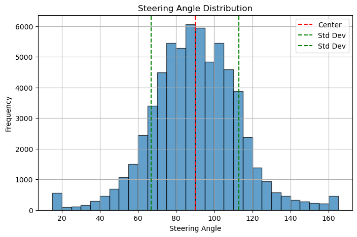
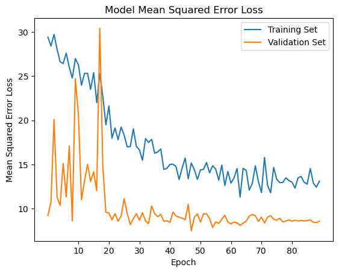

Model V39#
2024W2
Hector Richard-Guerrero
Julian Joaquin
Kenny Lui
Josh Singh
%pip install tqdm onnx tf2onnx opencv-python
Requirement already satisfied: tqdm in /home/julish/miniconda3/envs/mlenv/lib/python3.11/site-packages (4.67.1)
Requirement already satisfied: onnx in /home/julish/miniconda3/envs/mlenv/lib/python3.11/site-packages (1.17.0)
Requirement already satisfied: tf2onnx in /home/julish/miniconda3/envs/mlenv/lib/python3.11/site-packages (1.16.1)
Requirement already satisfied: opencv-python in /home/julish/miniconda3/envs/mlenv/lib/python3.11/site-packages (4.11.0.86)
Requirement already satisfied: numpy>=1.20 in /home/julish/miniconda3/envs/mlenv/lib/python3.11/site-packages (from onnx) (1.26.4)
Requirement already satisfied: protobuf>=3.20.2 in /home/julish/miniconda3/envs/mlenv/lib/python3.11/site-packages (from onnx) (3.20.3)
Requirement already satisfied: requests in /home/julish/miniconda3/envs/mlenv/lib/python3.11/site-packages (from tf2onnx) (2.32.3)
Requirement already satisfied: six in /home/julish/miniconda3/envs/mlenv/lib/python3.11/site-packages (from tf2onnx) (1.16.0)
Requirement already satisfied: flatbuffers>=1.12 in /home/julish/miniconda3/envs/mlenv/lib/python3.11/site-packages (from tf2onnx) (24.3.25)
Requirement already satisfied: charset-normalizer<4,>=2 in /home/julish/miniconda3/envs/mlenv/lib/python3.11/site-packages (from requests->tf2onnx) (3.3.2)
Requirement already satisfied: idna<4,>=2.5 in /home/julish/miniconda3/envs/mlenv/lib/python3.11/site-packages (from requests->tf2onnx) (3.7)
Requirement already satisfied: urllib3<3,>=1.21.1 in /home/julish/miniconda3/envs/mlenv/lib/python3.11/site-packages (from requests->tf2onnx) (2.2.3)
Requirement already satisfied: certifi>=2017.4.17 in /home/julish/miniconda3/envs/mlenv/lib/python3.11/site-packages (from requests->tf2onnx) (2025.1.31)
Note: you may need to restart the kernel to use updated packages.
Data Pipeline#
Data Loading#
import sys
import zipfile
from pathlib import Path
# detect if in Google Colab and mount Google Drive
google_colab = 'google.colab' in sys.modules
if google_colab:
from google.colab import drive
drive.mount('/content/drive', force_remount=True)
# string path of dataset .zip file
DATA_ZIP_NAME = 'data.zip' # change this to your dataset zip file name
# extract the dataset
parent_path = Path('/content/gdrive/MyDrive/') if google_colab else Path.cwd()
data_path = parent_path / DATA_ZIP_NAME
with zipfile.ZipFile(data_path, 'r') as zip_ref:
zip_ref.extractall()
# zip_ref will automatically close when exiting the with block
train_dirs = list(Path.cwd().glob('**/train/'))
test_dirs = list(Path.cwd().glob('**/test/'))
print("Train directories:")
for train_dir in train_dirs:
print(train_dir)
print("\nTest directories:")
for test_dir in test_dirs:
print(test_dir)
---------------------------------------------------------------------------
NameError Traceback (most recent call last)
Cell In[2], line 5
2 from pathlib import Path
4 # detect if in Google Colab and mount Google Drive
----> 5 google_colab = 'google.colab' in sys.modules
6 if google_colab:
7 from google.colab import drive
NameError: name 'sys' is not defined
File Loading Pipeline#
def dataset_file_get_timestamp(file: Path):
return int(file.stem.split('_')[0])
def dataset_file_get_steering_angle(file: Path):
return float(file.stem.split('_')[1].replace('-', '.'))
def load_data(directory: Path):
image_paths = []
steering_angles = []
# load image paths from the directory
for file_path in directory.glob('*.png'):
image_paths.append(file_path)
# sort images by the timestamp in their filenames
image_paths.sort(key=dataset_file_get_timestamp)
# Extract steering angles from filenames
for path in image_paths:
steering_angles.append(dataset_file_get_steering_angle(path))
return image_paths, steering_angles
train_img = []
train_steer = []
test_img = []
test_steer = []
for test_dir in test_dirs:
test_img_, test_steer_ = load_data(test_dir)
test_img += test_img_
test_steer += test_steer_
for train_dir in train_dirs:
train_img_, train_steer_ = load_data(train_dir)
train_img += train_img_
train_steer += train_steer_
print(f"Loaded {len(train_img)} training images "
f"and {len(test_img)} test images.")
Loaded 40000 training images and 24000 test images.
import matplotlib.pyplot as plt
import numpy as np
# Function to plot steering angle distribution
def plot_steering_angle_distribution(steering_angles):
steering_angles = np.array(steering_angles)
stdev = np.std(steering_angles)
plt.figure(figsize=(8, 5))
plt.hist(steering_angles, bins=30, alpha=0.7,
edgecolor='black')
plt.axvline(x=90, color='red', linestyle='--', label='Center')
plt.axvline(x=90 + stdev, color='green', linestyle='--', label='Std Dev')
plt.axvline(x=90 - stdev, color='green', linestyle='--', label='Std Dev')
plt.xlabel("Steering Angle")
plt.ylabel("Frequency")
plt.title("Steering Angle Distribution")
plt.grid(True)
plt.legend()
plt.show()
# Plot steering angle distribution
plot_steering_angle_distribution(train_steer + test_steer)

Preprocessing Pipeline#
import cv2 as cv
import tensorflow as tf
import tqdm
BATCH_SIZE = 50
RAND_SEED = 42
SHUFFLE_BUFFER_DIVIDER = 2
PREFETCH_BUFFER_SIZE = tf.data.experimental.AUTOTUNE
def process_image(image_path):
img = cv.imread(image_path)
hsv = cv.cvtColor(img, cv.COLOR_BGR2HSV)
mask = cv.inRange(hsv, (36, 0, 0), (70, 255,255))
array = np.array(mask, dtype=np.float32)
return array
def dataset_pipeline(features, labels, shuffle):
global BATCH_SIZE, RAND_SEED, SHUFFLE_BUFFER_DIVIDER, PREFETCH_BUFFER_SIZE
dataset = tf.data.Dataset.from_tensor_slices((features, labels))
dataset = dataset.repeat()
if shuffle:
print("Shuffling dataset")
dataset = dataset.shuffle(
buffer_size=len(features) // SHUFFLE_BUFFER_DIVIDER,
seed=RAND_SEED
)
dataset = dataset.batch(BATCH_SIZE)
dataset = dataset.prefetch(buffer_size=PREFETCH_BUFFER_SIZE)
return dataset
train_data = []
test_data = []
tqdm.tqdm.write("Loading training data")
# load the images and steering angles into numpy arrays
for path in tqdm.tqdm(train_img):
train_data.append(process_image(path))
tqdm.tqdm.write("Loading test data")
# loading the testing data
for path in tqdm.tqdm(test_img):
test_data.append(process_image(path))
## create a dataset from the training data by using the dataset pipeline
print("Creating training dataset")
train_ds = dataset_pipeline(train_data, train_steer, shuffle=True)
## create a dataset from the testing data by using the dataset pipeline
print("Creating testing dataset")
test_ds = dataset_pipeline(test_data, test_steer, shuffle=False)
print("Done!")
# output the first 16 images and steering angles from the dataset
fig, axs = plt.subplots(4, 4, figsize=(8, 8))
# add title to the figure
fig.suptitle('Training Data')
fig.tight_layout()
imgs, steer = next(iter(train_ds)) # get the first batch of images and steering angles
for i in range(16):
axs[i//4, i%4].axis('off')
axs[i//4, i%4].imshow(imgs[i])
axs[i//4, i%4].set_title(round(steer[i].numpy(), 2))
plt.tight_layout()
plt.show()
2025-04-02 13:45:07.448619: E external/local_xla/xla/stream_executor/cuda/cuda_fft.cc:485] Unable to register cuFFT factory: Attempting to register factory for plugin cuFFT when one has already been registered
2025-04-02 13:45:07.465985: E external/local_xla/xla/stream_executor/cuda/cuda_dnn.cc:8454] Unable to register cuDNN factory: Attempting to register factory for plugin cuDNN when one has already been registered
2025-04-02 13:45:07.470612: E external/local_xla/xla/stream_executor/cuda/cuda_blas.cc:1452] Unable to register cuBLAS factory: Attempting to register factory for plugin cuBLAS when one has already been registered
2025-04-02 13:45:07.535460: I tensorflow/core/platform/cpu_feature_guard.cc:210] This TensorFlow binary is optimized to use available CPU instructions in performance-critical operations.
To enable the following instructions: SSE4.1 SSE4.2 AVX AVX2 FMA, in other operations, rebuild TensorFlow with the appropriate compiler flags.
Loading training data
100%|██████████| 40000/40000 [00:03<00:00, 10430.91it/s]
Loading test data
100%|██████████| 24000/24000 [00:03<00:00, 7412.69it/s]
Creating training dataset
WARNING: All log messages before absl::InitializeLog() is called are written to STDERR
I0000 00:00:1743626716.964914 1181 cuda_executor.cc:1001] could not open file to read NUMA node: /sys/bus/pci/devices/0000:01:00.0/numa_node
Your kernel may have been built without NUMA support.
I0000 00:00:1743626717.113731 1181 cuda_executor.cc:1001] could not open file to read NUMA node: /sys/bus/pci/devices/0000:01:00.0/numa_node
Your kernel may have been built without NUMA support.
I0000 00:00:1743626717.113775 1181 cuda_executor.cc:1001] could not open file to read NUMA node: /sys/bus/pci/devices/0000:01:00.0/numa_node
Your kernel may have been built without NUMA support.
I0000 00:00:1743626717.116553 1181 cuda_executor.cc:1001] could not open file to read NUMA node: /sys/bus/pci/devices/0000:01:00.0/numa_node
Your kernel may have been built without NUMA support.
I0000 00:00:1743626717.116591 1181 cuda_executor.cc:1001] could not open file to read NUMA node: /sys/bus/pci/devices/0000:01:00.0/numa_node
Your kernel may have been built without NUMA support.
I0000 00:00:1743626717.116605 1181 cuda_executor.cc:1001] could not open file to read NUMA node: /sys/bus/pci/devices/0000:01:00.0/numa_node
Your kernel may have been built without NUMA support.
I0000 00:00:1743626717.242850 1181 cuda_executor.cc:1001] could not open file to read NUMA node: /sys/bus/pci/devices/0000:01:00.0/numa_node
Your kernel may have been built without NUMA support.
I0000 00:00:1743626717.242914 1181 cuda_executor.cc:1001] could not open file to read NUMA node: /sys/bus/pci/devices/0000:01:00.0/numa_node
Your kernel may have been built without NUMA support.
2025-04-02 13:45:17.242921: I tensorflow/core/common_runtime/gpu/gpu_device.cc:2112] Could not identify NUMA node of platform GPU id 0, defaulting to 0. Your kernel may not have been built with NUMA support.
I0000 00:00:1743626717.242954 1181 cuda_executor.cc:1001] could not open file to read NUMA node: /sys/bus/pci/devices/0000:01:00.0/numa_node
Your kernel may have been built without NUMA support.
2025-04-02 13:45:17.242967: I tensorflow/core/common_runtime/gpu/gpu_device.cc:2021] Created device /job:localhost/replica:0/task:0/device:GPU:0 with 9558 MB memory: -> device: 0, name: NVIDIA GeForce RTX 4070, pci bus id: 0000:01:00.0, compute capability: 8.9
2025-04-02 13:45:17.249411: W external/local_tsl/tsl/framework/cpu_allocator_impl.cc:83] Allocation of 1056000000 exceeds 10% of free system memory.
2025-04-02 13:45:28.540563: W external/local_tsl/tsl/framework/cpu_allocator_impl.cc:83] Allocation of 1056000000 exceeds 10% of free system memory.
Shuffling dataset
Creating testing dataset
Done!
2025-04-02 13:45:36.153623: W external/local_tsl/tsl/framework/cpu_allocator_impl.cc:83] Allocation of 1056000000 exceeds 10% of free system memory.

Model Design#
Neural Network Design#
from keras import layers
from keras import models
IMG_HEIGHT = 66
IMG_WIDTH = 100
conv_params = {
'kernel_size': (3,3),
'activation': 'relu',
'padding': 'same'
}
def conv_block(filters, thick, conv_params):
block_layers = []
for _ in range(thick):
block_layers.append(layers.SeparableConv2D(filters, **conv_params))
block_layers.append(layers.BatchNormalization())
block_layers.append(layers.MaxPool2D((2,2)))
return tuple(block_layers)
model = models.Sequential([
layers.Input(shape=(66, 100, 1)),
# Feature Extraction
*conv_block(8, 1, conv_params),
*conv_block(12, 1, conv_params),
*conv_block(16, 1, conv_params),
*conv_block(32, 2, conv_params),
*conv_block(48, 2, conv_params),
layers.Dropout(0.5),
# Feature Reduction
layers.GlobalAvgPool2D(),
# Fully Connected Layers
layers.Dense(48, activation='relu'),
layers.Dense(32, activation='relu'),
layers.Dense(16, activation='relu'),
layers.Dense(8, activation='relu'),
# Output Layer: Steering Angle (0-180 degrees)
layers.Dense(1, activation='linear') # Output raw angle
])
# Print Summary
model.summary()
Model: "sequential"
┏━━━━━━━━━━━━━━━━━━━━━━━━━━━━━━━━━┳━━━━━━━━━━━━━━━━━━━━━━━━┳━━━━━━━━━━━━━━━┓ ┃ Layer (type) ┃ Output Shape ┃ Param # ┃ ┡━━━━━━━━━━━━━━━━━━━━━━━━━━━━━━━━━╇━━━━━━━━━━━━━━━━━━━━━━━━╇━━━━━━━━━━━━━━━┩ │ separable_conv2d │ (None, 66, 100, 8) │ 25 │ │ (SeparableConv2D) │ │ │ ├─────────────────────────────────┼────────────────────────┼───────────────┤ │ max_pooling2d (MaxPooling2D) │ (None, 33, 50, 8) │ 0 │ ├─────────────────────────────────┼────────────────────────┼───────────────┤ │ separable_conv2d_1 │ (None, 33, 50, 12) │ 180 │ │ (SeparableConv2D) │ │ │ ├─────────────────────────────────┼────────────────────────┼───────────────┤ │ max_pooling2d_1 (MaxPooling2D) │ (None, 16, 25, 12) │ 0 │ ├─────────────────────────────────┼────────────────────────┼───────────────┤ │ separable_conv2d_2 │ (None, 16, 25, 16) │ 316 │ │ (SeparableConv2D) │ │ │ ├─────────────────────────────────┼────────────────────────┼───────────────┤ │ max_pooling2d_2 (MaxPooling2D) │ (None, 8, 12, 16) │ 0 │ ├─────────────────────────────────┼────────────────────────┼───────────────┤ │ separable_conv2d_3 │ (None, 8, 12, 32) │ 688 │ │ (SeparableConv2D) │ │ │ ├─────────────────────────────────┼────────────────────────┼───────────────┤ │ separable_conv2d_4 │ (None, 8, 12, 32) │ 1,344 │ │ (SeparableConv2D) │ │ │ ├─────────────────────────────────┼────────────────────────┼───────────────┤ │ max_pooling2d_3 (MaxPooling2D) │ (None, 4, 6, 32) │ 0 │ ├─────────────────────────────────┼────────────────────────┼───────────────┤ │ separable_conv2d_5 │ (None, 4, 6, 48) │ 1,872 │ │ (SeparableConv2D) │ │ │ ├─────────────────────────────────┼────────────────────────┼───────────────┤ │ separable_conv2d_6 │ (None, 4, 6, 48) │ 2,784 │ │ (SeparableConv2D) │ │ │ ├─────────────────────────────────┼────────────────────────┼───────────────┤ │ max_pooling2d_4 (MaxPooling2D) │ (None, 2, 3, 48) │ 0 │ ├─────────────────────────────────┼────────────────────────┼───────────────┤ │ dropout (Dropout) │ (None, 2, 3, 48) │ 0 │ ├─────────────────────────────────┼────────────────────────┼───────────────┤ │ global_average_pooling2d │ (None, 48) │ 0 │ │ (GlobalAveragePooling2D) │ │ │ ├─────────────────────────────────┼────────────────────────┼───────────────┤ │ dense (Dense) │ (None, 48) │ 2,352 │ ├─────────────────────────────────┼────────────────────────┼───────────────┤ │ dense_1 (Dense) │ (None, 32) │ 1,568 │ ├─────────────────────────────────┼────────────────────────┼───────────────┤ │ dense_2 (Dense) │ (None, 16) │ 528 │ ├─────────────────────────────────┼────────────────────────┼───────────────┤ │ dense_3 (Dense) │ (None, 8) │ 136 │ ├─────────────────────────────────┼────────────────────────┼───────────────┤ │ dense_4 (Dense) │ (None, 1) │ 9 │ └─────────────────────────────────┴────────────────────────┴───────────────┘
Total params: 11,802 (46.10 KB)
Trainable params: 11,802 (46.10 KB)
Non-trainable params: 0 (0.00 B)
Training Parameters#
import tensorflow as tf
from keras import callbacks
from keras import losses
from keras import metrics
from keras import optimizers
## Training parameters
# Specify the various parameters for training
BATCH_DIVIDER = 1
EPOCHS = 100
LEARNING_RATE = 0.002
OPTIMIZER = optimizers.RMSprop(learning_rate=LEARNING_RATE)
LOSS = losses.MeanSquaredError()
METRICS = metrics.RootMeanSquaredError()
## Reduce Learning Rate (RLR) on Plateau parameters
# Reduce learning rate when validation loss doesn't improve for a
# certain number of epochs
RLR_ON = True
RLR_FACTOR = 0.5
RLR_PATIENCE = 10
## Epoch Logger (EL) parameters
# Reduce the number of epochs printed to console to avoid clutter
EL_ON = False
EL_EPOCHS = 10
class EpochLogger(tf.keras.callbacks.Callback):
def on_epoch_end(self, epoch, logs=None):
'''Logs training progress every 10 epochs.'''
if (epoch + 1) % EL_EPOCHS == 0: # Log every 10 epochs
print(f"Epoch {epoch+1}: Loss = {logs['loss']:.4f},",
f"Val Loss = {logs.get('val_loss', 'N/A'):.4f}")
epoch_logger = EpochLogger()
lr_schedule = callbacks.ReduceLROnPlateau(
monitor='val_loss', factor=RLR_FACTOR,
patience=RLR_PATIENCE, verbose=0)
callbacks = []
if RLR_ON:
callbacks.append(lr_schedule)
if EL_ON:
callbacks.append(epoch_logger)
fit_params = {
'epochs': EPOCHS,
'verbose': 0 if EL_ON else 1,
'callbacks': callbacks,
}
model.compile(optimizer=OPTIMIZER, loss=LOSS)
Training#
hist = model.fit(train_ds,
steps_per_epoch=len(train_img) // BATCH_SIZE // BATCH_DIVIDER,
validation_data=test_ds,
validation_steps=len(test_img) // BATCH_SIZE // BATCH_DIVIDER,
**fit_params)
Epoch 1/100
I0000 00:00:1743626741.539725 1665 service.cc:146] XLA service 0x7f9e20012b20 initialized for platform CUDA (this does not guarantee that XLA will be used). Devices:
I0000 00:00:1743626741.539754 1665 service.cc:154] StreamExecutor device (0): NVIDIA GeForce RTX 4070, Compute Capability 8.9
2025-04-02 13:45:41.591967: I tensorflow/compiler/mlir/tensorflow/utils/dump_mlir_util.cc:268] disabling MLIR crash reproducer, set env var `MLIR_CRASH_REPRODUCER_DIRECTORY` to enable.
2025-04-02 13:45:41.735921: I external/local_xla/xla/stream_executor/cuda/cuda_dnn.cc:531] Loaded cuDNN version 90101
2025-04-02 13:45:42.374803: I external/local_xla/xla/stream_executor/cuda/cuda_asm_compiler.cc:393] ptxas warning : Registers are spilled to local memory in function 'gemm_fusion_dot_1596', 8 bytes spill stores, 8 bytes spill loads
82/800 ━━━━━━━━━━━━━━━━━━━━ 1s 2ms/step - loss: 4202.6172
I0000 00:00:1743626746.131596 1665 device_compiler.h:188] Compiled cluster using XLA! This line is logged at most once for the lifetime of the process.
800/800 ━━━━━━━━━━━━━━━━━━━━ 9s 4ms/step - loss: 1243.2996 - val_loss: 61.2981 - learning_rate: 0.0020
Epoch 2/100
800/800 ━━━━━━━━━━━━━━━━━━━━ 2s 2ms/step - loss: 184.2678 - val_loss: 33.3642 - learning_rate: 0.0020
Epoch 3/100
800/800 ━━━━━━━━━━━━━━━━━━━━ 2s 2ms/step - loss: 128.9505 - val_loss: 22.4022 - learning_rate: 0.0020
Epoch 4/100
800/800 ━━━━━━━━━━━━━━━━━━━━ 2s 2ms/step - loss: 92.9492 - val_loss: 49.0908 - learning_rate: 0.0020
Epoch 5/100
800/800 ━━━━━━━━━━━━━━━━━━━━ 2s 2ms/step - loss: 66.2100 - val_loss: 24.1471 - learning_rate: 0.0020
Epoch 6/100
800/800 ━━━━━━━━━━━━━━━━━━━━ 2s 2ms/step - loss: 49.2841 - val_loss: 14.4912 - learning_rate: 0.0020
Epoch 7/100
800/800 ━━━━━━━━━━━━━━━━━━━━ 2s 2ms/step - loss: 48.6528 - val_loss: 14.0226 - learning_rate: 0.0020
Epoch 8/100
800/800 ━━━━━━━━━━━━━━━━━━━━ 2s 2ms/step - loss: 39.7161 - val_loss: 10.9588 - learning_rate: 0.0020
Epoch 9/100
800/800 ━━━━━━━━━━━━━━━━━━━━ 2s 2ms/step - loss: 30.9380 - val_loss: 9.6941 - learning_rate: 0.0020
Epoch 10/100
800/800 ━━━━━━━━━━━━━━━━━━━━ 2s 2ms/step - loss: 34.8701 - val_loss: 11.1304 - learning_rate: 0.0020
Epoch 11/100
800/800 ━━━━━━━━━━━━━━━━━━━━ 2s 2ms/step - loss: 30.7421 - val_loss: 9.2222 - learning_rate: 0.0020
Epoch 12/100
800/800 ━━━━━━━━━━━━━━━━━━━━ 2s 2ms/step - loss: 28.3924 - val_loss: 10.7608 - learning_rate: 0.0020
Epoch 13/100
800/800 ━━━━━━━━━━━━━━━━━━━━ 2s 2ms/step - loss: 31.3787 - val_loss: 20.0923 - learning_rate: 0.0020
Epoch 14/100
800/800 ━━━━━━━━━━━━━━━━━━━━ 2s 2ms/step - loss: 27.5369 - val_loss: 11.3035 - learning_rate: 0.0020
Epoch 15/100
800/800 ━━━━━━━━━━━━━━━━━━━━ 2s 2ms/step - loss: 30.9608 - val_loss: 10.3828 - learning_rate: 0.0020
Epoch 16/100
800/800 ━━━━━━━━━━━━━━━━━━━━ 2s 2ms/step - loss: 28.8685 - val_loss: 15.1291 - learning_rate: 0.0020
Epoch 17/100
800/800 ━━━━━━━━━━━━━━━━━━━━ 2s 2ms/step - loss: 27.5863 - val_loss: 11.3425 - learning_rate: 0.0020
Epoch 18/100
800/800 ━━━━━━━━━━━━━━━━━━━━ 2s 2ms/step - loss: 26.5025 - val_loss: 17.1020 - learning_rate: 0.0020
Epoch 19/100
800/800 ━━━━━━━━━━━━━━━━━━━━ 2s 2ms/step - loss: 28.9785 - val_loss: 8.6324 - learning_rate: 0.0020
Epoch 20/100
800/800 ━━━━━━━━━━━━━━━━━━━━ 3s 3ms/step - loss: 25.0569 - val_loss: 24.7020 - learning_rate: 0.0020
Epoch 21/100
800/800 ━━━━━━━━━━━━━━━━━━━━ 2s 2ms/step - loss: 28.2537 - val_loss: 20.7134 - learning_rate: 0.0020
Epoch 22/100
800/800 ━━━━━━━━━━━━━━━━━━━━ 2s 2ms/step - loss: 26.1053 - val_loss: 10.9991 - learning_rate: 0.0020
Epoch 23/100
800/800 ━━━━━━━━━━━━━━━━━━━━ 2s 2ms/step - loss: 28.2388 - val_loss: 13.1400 - learning_rate: 0.0020
Epoch 24/100
800/800 ━━━━━━━━━━━━━━━━━━━━ 2s 2ms/step - loss: 26.8638 - val_loss: 15.0321 - learning_rate: 0.0020
Epoch 25/100
800/800 ━━━━━━━━━━━━━━━━━━━━ 2s 2ms/step - loss: 23.1579 - val_loss: 13.0851 - learning_rate: 0.0020
Epoch 26/100
800/800 ━━━━━━━━━━━━━━━━━━━━ 2s 2ms/step - loss: 28.2924 - val_loss: 14.1883 - learning_rate: 0.0020
Epoch 27/100
800/800 ━━━━━━━━━━━━━━━━━━━━ 2s 2ms/step - loss: 25.1398 - val_loss: 12.0352 - learning_rate: 0.0020
Epoch 28/100
800/800 ━━━━━━━━━━━━━━━━━━━━ 2s 2ms/step - loss: 28.5213 - val_loss: 30.4148 - learning_rate: 0.0020
Epoch 29/100
800/800 ━━━━━━━━━━━━━━━━━━━━ 2s 2ms/step - loss: 24.1136 - val_loss: 14.8101 - learning_rate: 0.0020
Epoch 30/100
800/800 ━━━━━━━━━━━━━━━━━━━━ 2s 2ms/step - loss: 22.8111 - val_loss: 9.5994 - learning_rate: 0.0010
Epoch 31/100
800/800 ━━━━━━━━━━━━━━━━━━━━ 2s 2ms/step - loss: 19.0283 - val_loss: 9.5255 - learning_rate: 0.0010
Epoch 32/100
800/800 ━━━━━━━━━━━━━━━━━━━━ 2s 2ms/step - loss: 21.6292 - val_loss: 8.7365 - learning_rate: 0.0010
Epoch 33/100
800/800 ━━━━━━━━━━━━━━━━━━━━ 2s 2ms/step - loss: 21.8084 - val_loss: 9.4459 - learning_rate: 0.0010
Epoch 34/100
800/800 ━━━━━━━━━━━━━━━━━━━━ 2s 2ms/step - loss: 19.0750 - val_loss: 8.5756 - learning_rate: 0.0010
Epoch 35/100
800/800 ━━━━━━━━━━━━━━━━━━━━ 2s 2ms/step - loss: 23.1720 - val_loss: 9.1865 - learning_rate: 0.0010
Epoch 36/100
800/800 ━━━━━━━━━━━━━━━━━━━━ 2s 2ms/step - loss: 20.0171 - val_loss: 11.1336 - learning_rate: 0.0010
Epoch 37/100
800/800 ━━━━━━━━━━━━━━━━━━━━ 2s 2ms/step - loss: 20.4154 - val_loss: 9.4717 - learning_rate: 0.0010
Epoch 38/100
800/800 ━━━━━━━━━━━━━━━━━━━━ 2s 2ms/step - loss: 15.5069 - val_loss: 8.1979 - learning_rate: 0.0010
Epoch 39/100
800/800 ━━━━━━━━━━━━━━━━━━━━ 2s 3ms/step - loss: 18.3668 - val_loss: 8.8586 - learning_rate: 0.0010
Epoch 40/100
800/800 ━━━━━━━━━━━━━━━━━━━━ 2s 2ms/step - loss: 18.2569 - val_loss: 9.4389 - learning_rate: 0.0010
Epoch 41/100
800/800 ━━━━━━━━━━━━━━━━━━━━ 2s 2ms/step - loss: 17.8123 - val_loss: 8.6964 - learning_rate: 0.0010
Epoch 42/100
800/800 ━━━━━━━━━━━━━━━━━━━━ 2s 2ms/step - loss: 18.6302 - val_loss: 9.5512 - learning_rate: 0.0010
Epoch 43/100
800/800 ━━━━━━━━━━━━━━━━━━━━ 2s 2ms/step - loss: 20.6697 - val_loss: 8.6236 - learning_rate: 0.0010
Epoch 44/100
800/800 ━━━━━━━━━━━━━━━━━━━━ 2s 2ms/step - loss: 17.8980 - val_loss: 8.3157 - learning_rate: 0.0010
Epoch 45/100
800/800 ━━━━━━━━━━━━━━━━━━━━ 2s 2ms/step - loss: 18.8386 - val_loss: 10.3033 - learning_rate: 0.0010
Epoch 46/100
800/800 ━━━━━━━━━━━━━━━━━━━━ 2s 2ms/step - loss: 18.3508 - val_loss: 9.4349 - learning_rate: 0.0010
Epoch 47/100
800/800 ━━━━━━━━━━━━━━━━━━━━ 2s 2ms/step - loss: 17.5177 - val_loss: 9.1036 - learning_rate: 0.0010
Epoch 48/100
800/800 ━━━━━━━━━━━━━━━━━━━━ 2s 2ms/step - loss: 19.1302 - val_loss: 9.3564 - learning_rate: 0.0010
Epoch 49/100
800/800 ━━━━━━━━━━━━━━━━━━━━ 2s 2ms/step - loss: 14.0184 - val_loss: 8.5735 - learning_rate: 5.0000e-04
Epoch 50/100
800/800 ━━━━━━━━━━━━━━━━━━━━ 2s 2ms/step - loss: 17.4416 - val_loss: 8.6411 - learning_rate: 5.0000e-04
Epoch 51/100
800/800 ━━━━━━━━━━━━━━━━━━━━ 2s 2ms/step - loss: 15.5949 - val_loss: 8.4463 - learning_rate: 5.0000e-04
Epoch 52/100
800/800 ━━━━━━━━━━━━━━━━━━━━ 2s 2ms/step - loss: 16.8818 - val_loss: 9.6199 - learning_rate: 5.0000e-04
Epoch 53/100
800/800 ━━━━━━━━━━━━━━━━━━━━ 2s 2ms/step - loss: 14.5040 - val_loss: 9.1780 - learning_rate: 5.0000e-04
Epoch 54/100
800/800 ━━━━━━━━━━━━━━━━━━━━ 2s 2ms/step - loss: 13.6233 - val_loss: 9.0352 - learning_rate: 5.0000e-04
Epoch 55/100
800/800 ━━━━━━━━━━━━━━━━━━━━ 2s 2ms/step - loss: 17.9407 - val_loss: 8.9327 - learning_rate: 5.0000e-04
Epoch 56/100
800/800 ━━━━━━━━━━━━━━━━━━━━ 2s 2ms/step - loss: 18.6037 - val_loss: 8.7536 - learning_rate: 5.0000e-04
Epoch 57/100
800/800 ━━━━━━━━━━━━━━━━━━━━ 2s 2ms/step - loss: 15.9242 - val_loss: 10.4859 - learning_rate: 5.0000e-04
Epoch 58/100
800/800 ━━━━━━━━━━━━━━━━━━━━ 2s 2ms/step - loss: 17.6878 - val_loss: 7.5033 - learning_rate: 5.0000e-04
Epoch 59/100
800/800 ━━━━━━━━━━━━━━━━━━━━ 3s 3ms/step - loss: 15.0827 - val_loss: 9.0561 - learning_rate: 5.0000e-04
Epoch 60/100
800/800 ━━━━━━━━━━━━━━━━━━━━ 2s 2ms/step - loss: 17.1372 - val_loss: 9.4167 - learning_rate: 5.0000e-04
Epoch 61/100
800/800 ━━━━━━━━━━━━━━━━━━━━ 2s 2ms/step - loss: 17.9209 - val_loss: 8.4820 - learning_rate: 5.0000e-04
Epoch 62/100
800/800 ━━━━━━━━━━━━━━━━━━━━ 2s 2ms/step - loss: 18.2952 - val_loss: 9.4308 - learning_rate: 5.0000e-04
Epoch 63/100
800/800 ━━━━━━━━━━━━━━━━━━━━ 2s 2ms/step - loss: 17.3987 - val_loss: 9.4164 - learning_rate: 5.0000e-04
Epoch 64/100
800/800 ━━━━━━━━━━━━━━━━━━━━ 2s 2ms/step - loss: 15.2206 - val_loss: 8.8827 - learning_rate: 5.0000e-04
Epoch 65/100
800/800 ━━━━━━━━━━━━━━━━━━━━ 2s 2ms/step - loss: 17.0004 - val_loss: 7.8713 - learning_rate: 5.0000e-04
Epoch 66/100
800/800 ━━━━━━━━━━━━━━━━━━━━ 2s 2ms/step - loss: 16.4720 - val_loss: 8.5143 - learning_rate: 5.0000e-04
Epoch 67/100
800/800 ━━━━━━━━━━━━━━━━━━━━ 2s 2ms/step - loss: 13.5268 - val_loss: 8.3220 - learning_rate: 5.0000e-04
Epoch 68/100
800/800 ━━━━━━━━━━━━━━━━━━━━ 2s 2ms/step - loss: 15.9697 - val_loss: 8.8038 - learning_rate: 5.0000e-04
Epoch 69/100
800/800 ━━━━━━━━━━━━━━━━━━━━ 2s 2ms/step - loss: 14.4103 - val_loss: 9.2593 - learning_rate: 2.5000e-04
Epoch 70/100
800/800 ━━━━━━━━━━━━━━━━━━━━ 2s 2ms/step - loss: 14.9148 - val_loss: 8.4795 - learning_rate: 2.5000e-04
Epoch 71/100
800/800 ━━━━━━━━━━━━━━━━━━━━ 2s 2ms/step - loss: 15.1346 - val_loss: 8.2811 - learning_rate: 2.5000e-04
Epoch 72/100
800/800 ━━━━━━━━━━━━━━━━━━━━ 2s 2ms/step - loss: 13.6233 - val_loss: 8.5004 - learning_rate: 2.5000e-04
Epoch 73/100
800/800 ━━━━━━━━━━━━━━━━━━━━ 2s 2ms/step - loss: 17.2038 - val_loss: 8.3895 - learning_rate: 2.5000e-04
Epoch 74/100
800/800 ━━━━━━━━━━━━━━━━━━━━ 2s 2ms/step - loss: 10.8896 - val_loss: 8.1250 - learning_rate: 2.5000e-04
Epoch 75/100
800/800 ━━━━━━━━━━━━━━━━━━━━ 2s 2ms/step - loss: 15.7110 - val_loss: 8.3681 - learning_rate: 2.5000e-04
Epoch 76/100
800/800 ━━━━━━━━━━━━━━━━━━━━ 2s 2ms/step - loss: 14.9562 - val_loss: 8.5853 - learning_rate: 2.5000e-04
Epoch 77/100
800/800 ━━━━━━━━━━━━━━━━━━━━ 3s 3ms/step - loss: 13.4034 - val_loss: 9.1679 - learning_rate: 2.5000e-04
Epoch 78/100
800/800 ━━━━━━━━━━━━━━━━━━━━ 2s 2ms/step - loss: 15.2769 - val_loss: 9.3483 - learning_rate: 2.5000e-04
Epoch 79/100
800/800 ━━━━━━━━━━━━━━━━━━━━ 2s 2ms/step - loss: 17.6752 - val_loss: 9.2172 - learning_rate: 1.2500e-04
Epoch 80/100
800/800 ━━━━━━━━━━━━━━━━━━━━ 2s 2ms/step - loss: 12.8384 - val_loss: 8.5651 - learning_rate: 1.2500e-04
Epoch 81/100
800/800 ━━━━━━━━━━━━━━━━━━━━ 2s 2ms/step - loss: 13.6277 - val_loss: 9.0502 - learning_rate: 1.2500e-04
Epoch 82/100
800/800 ━━━━━━━━━━━━━━━━━━━━ 1s 2ms/step - loss: 19.3489 - val_loss: 8.3705 - learning_rate: 1.2500e-04
Epoch 83/100
800/800 ━━━━━━━━━━━━━━━━━━━━ 1s 2ms/step - loss: 13.9178 - val_loss: 9.0393 - learning_rate: 1.2500e-04
Epoch 84/100
800/800 ━━━━━━━━━━━━━━━━━━━━ 2s 2ms/step - loss: 14.2789 - val_loss: 9.2243 - learning_rate: 1.2500e-04
Epoch 85/100
800/800 ━━━━━━━━━━━━━━━━━━━━ 2s 2ms/step - loss: 16.6329 - val_loss: 8.7991 - learning_rate: 1.2500e-04
Epoch 86/100
800/800 ━━━━━━━━━━━━━━━━━━━━ 1s 2ms/step - loss: 15.1976 - val_loss: 8.7119 - learning_rate: 1.2500e-04
Epoch 87/100
800/800 ━━━━━━━━━━━━━━━━━━━━ 2s 2ms/step - loss: 14.2073 - val_loss: 8.9114 - learning_rate: 1.2500e-04
Epoch 88/100
800/800 ━━━━━━━━━━━━━━━━━━━━ 2s 2ms/step - loss: 14.9858 - val_loss: 8.5031 - learning_rate: 1.2500e-04
Epoch 89/100
800/800 ━━━━━━━━━━━━━━━━━━━━ 2s 2ms/step - loss: 13.6385 - val_loss: 8.5954 - learning_rate: 6.2500e-05
Epoch 90/100
800/800 ━━━━━━━━━━━━━━━━━━━━ 2s 2ms/step - loss: 15.2615 - val_loss: 8.7347 - learning_rate: 6.2500e-05
Epoch 91/100
800/800 ━━━━━━━━━━━━━━━━━━━━ 2s 2ms/step - loss: 10.8730 - val_loss: 8.5785 - learning_rate: 6.2500e-05
Epoch 92/100
800/800 ━━━━━━━━━━━━━━━━━━━━ 2s 2ms/step - loss: 15.7969 - val_loss: 8.6926 - learning_rate: 6.2500e-05
Epoch 93/100
800/800 ━━━━━━━━━━━━━━━━━━━━ 2s 2ms/step - loss: 14.9199 - val_loss: 8.6056 - learning_rate: 6.2500e-05
Epoch 94/100
800/800 ━━━━━━━━━━━━━━━━━━━━ 2s 2ms/step - loss: 16.1543 - val_loss: 8.6776 - learning_rate: 6.2500e-05
Epoch 95/100
800/800 ━━━━━━━━━━━━━━━━━━━━ 2s 2ms/step - loss: 14.8332 - val_loss: 8.6165 - learning_rate: 6.2500e-05
Epoch 96/100
800/800 ━━━━━━━━━━━━━━━━━━━━ 2s 2ms/step - loss: 16.0908 - val_loss: 8.6736 - learning_rate: 6.2500e-05
Epoch 97/100
800/800 ━━━━━━━━━━━━━━━━━━━━ 2s 2ms/step - loss: 15.2007 - val_loss: 8.7211 - learning_rate: 6.2500e-05
Epoch 98/100
800/800 ━━━━━━━━━━━━━━━━━━━━ 3s 3ms/step - loss: 14.7574 - val_loss: 8.4693 - learning_rate: 6.2500e-05
Epoch 99/100
800/800 ━━━━━━━━━━━━━━━━━━━━ 2s 2ms/step - loss: 11.0137 - val_loss: 8.4327 - learning_rate: 3.1250e-05
Epoch 100/100
800/800 ━━━━━━━━━━━━━━━━━━━━ 2s 2ms/step - loss: 13.7720 - val_loss: 8.5889 - learning_rate: 3.1250e-05
Results#
# Plot the model's history
OFFSET = 10
plt.plot(hist.history['loss'][OFFSET:])
plt.plot(hist.history['val_loss'][OFFSET:])
plt.title('Model Mean Squared Error Loss')
plt.ylabel('Mean Squared Error Loss')
plt.xlabel('Epoch')
plt.xticks(np.arange(OFFSET, len(hist.history['loss'][OFFSET:]), 10))
plt.legend(['Training Set', 'Validation Set'], loc='upper right')
plt.show()

imgs, steer = next(iter(test_ds)) # get the first batch of images and steering angles
eval_out = model.evaluate(test_ds, steps=50) # Helps stabilize BatchNorm running statistics
print(f"Test loss: {eval_out}")
prediction = model.predict(imgs[-1].numpy().reshape(1, 66, 100, 1))
print(f"Predicted steering angle: {prediction[0][0]:.2f}")
print(f"Actual steering angle: {steer[-1].numpy():.2f}")
50/50 ━━━━━━━━━━━━━━━━━━━━ 0s 4ms/step - loss: 0.7866
Test loss: 1.2670005559921265
1/1 ━━━━━━━━━━━━━━━━━━━━ 1s 811ms/step
Predicted steering angle: 80.52
Actual steering angle: 80.51
def display_results():
# output the first 16 images and steering angles from the test dataset then predict the steering angle for the images
fig, axs = plt.subplots(4, 4, figsize=(8, 8))
# add title to the figure
fig.suptitle('Training Data')
fig.tight_layout()
imgs, steer = next(iter(test_ds)) # get the first batch of images and steering angles
for i in range(16):
axs[i//4, i%4].axis('off')
axs[i//4, i%4].imshow(imgs[i])
axs[i//4, i%4].set_title(round(steer[i].numpy(), 2))
predicted = model(imgs[i].numpy().reshape(1, 66, 100, 1)) # predict the steering angle for the image
axs[i//4, i%4].set_title("Predicted: " + str(np.round(predicted[0][0].numpy(), 2))
+ "\n Actual: " + str(round(steer[i].numpy(), 2)))
plt.tight_layout()
plt.show()
display_results()
W0000 00:00:1743626487.411925 1140 gpu_timer.cc:114] Skipping the delay kernel, measurement accuracy will be reduced
W0000 00:00:1743626487.427447 1140 gpu_timer.cc:114] Skipping the delay kernel, measurement accuracy will be reduced
W0000 00:00:1743626487.432645 1140 gpu_timer.cc:114] Skipping the delay kernel, measurement accuracy will be reduced
W0000 00:00:1743626487.445197 1140 gpu_timer.cc:114] Skipping the delay kernel, measurement accuracy will be reduced
W0000 00:00:1743626487.449983 1140 gpu_timer.cc:114] Skipping the delay kernel, measurement accuracy will be reduced
W0000 00:00:1743626487.460242 1140 gpu_timer.cc:114] Skipping the delay kernel, measurement accuracy will be reduced
W0000 00:00:1743626487.465360 1140 gpu_timer.cc:114] Skipping the delay kernel, measurement accuracy will be reduced
W0000 00:00:1743626487.470027 1140 gpu_timer.cc:114] Skipping the delay kernel, measurement accuracy will be reduced
W0000 00:00:1743626487.475828 1140 gpu_timer.cc:114] Skipping the delay kernel, measurement accuracy will be reduced
W0000 00:00:1743626487.482089 1140 gpu_timer.cc:114] Skipping the delay kernel, measurement accuracy will be reduced
W0000 00:00:1743626487.488841 1140 gpu_timer.cc:114] Skipping the delay kernel, measurement accuracy will be reduced
W0000 00:00:1743626487.493872 1140 gpu_timer.cc:114] Skipping the delay kernel, measurement accuracy will be reduced
import onnx
import tf2onnx
import tensorflow as tf
model_name = "cnn-v35" # change the name to something more descriptive if you want
model.save(model_name + '.keras')
model.save(model_name + ".h5")
model.output_names = ['output']
input_signature = [tf.TensorSpec([None, 66, 100, 1], tf.float32, name='input')]
onnx_model, _ = tf2onnx.convert.from_keras(model, input_signature=input_signature, opset=13)
onnx.save(onnx_model, model_name + ".onnx")
WARNING:absl:You are saving your model as an HDF5 file via `model.save()` or `keras.saving.save_model(model)`. This file format is considered legacy. We recommend using instead the native Keras format, e.g. `model.save('my_model.keras')` or `keras.saving.save_model(model, 'my_model.keras')`.
I0000 00:00:1743330552.554134 27527 cuda_executor.cc:1001] could not open file to read NUMA node: /sys/bus/pci/devices/0000:01:00.0/numa_node
Your kernel may have been built without NUMA support.
I0000 00:00:1743330552.555068 27527 devices.cc:67] Number of eligible GPUs (core count >= 8, compute capability >= 0.0): 1
2025-03-30 03:29:12.555146: I tensorflow/core/grappler/clusters/single_machine.cc:361] Starting new session
I0000 00:00:1743330552.555417 27527 cuda_executor.cc:1001] could not open file to read NUMA node: /sys/bus/pci/devices/0000:01:00.0/numa_node
Your kernel may have been built without NUMA support.
I0000 00:00:1743330552.555441 27527 cuda_executor.cc:1001] could not open file to read NUMA node: /sys/bus/pci/devices/0000:01:00.0/numa_node
Your kernel may have been built without NUMA support.
I0000 00:00:1743330552.555453 27527 cuda_executor.cc:1001] could not open file to read NUMA node: /sys/bus/pci/devices/0000:01:00.0/numa_node
Your kernel may have been built without NUMA support.
I0000 00:00:1743330552.555546 27527 cuda_executor.cc:1001] could not open file to read NUMA node: /sys/bus/pci/devices/0000:01:00.0/numa_node
Your kernel may have been built without NUMA support.
2025-03-30 03:29:12.555552: I tensorflow/core/common_runtime/gpu/gpu_device.cc:2112] Could not identify NUMA node of platform GPU id 0, defaulting to 0. Your kernel may not have been built with NUMA support.
I0000 00:00:1743330552.555569 27527 cuda_executor.cc:1001] could not open file to read NUMA node: /sys/bus/pci/devices/0000:01:00.0/numa_node
Your kernel may have been built without NUMA support.
2025-03-30 03:29:12.555578: I tensorflow/core/common_runtime/gpu/gpu_device.cc:2021] Created device /job:localhost/replica:0/task:0/device:GPU:0 with 9558 MB memory: -> device: 0, name: NVIDIA GeForce RTX 4070, pci bus id: 0000:01:00.0, compute capability: 8.9
I0000 00:00:1743330552.882589 27527 cuda_executor.cc:1001] could not open file to read NUMA node: /sys/bus/pci/devices/0000:01:00.0/numa_node
Your kernel may have been built without NUMA support.
I0000 00:00:1743330552.882655 27527 cuda_executor.cc:1001] could not open file to read NUMA node: /sys/bus/pci/devices/0000:01:00.0/numa_node
Your kernel may have been built without NUMA support.
I0000 00:00:1743330552.882671 27527 cuda_executor.cc:1001] could not open file to read NUMA node: /sys/bus/pci/devices/0000:01:00.0/numa_node
Your kernel may have been built without NUMA support.
I0000 00:00:1743330552.882907 27527 cuda_executor.cc:1001] could not open file to read NUMA node: /sys/bus/pci/devices/0000:01:00.0/numa_node
Your kernel may have been built without NUMA support.
2025-03-30 03:29:12.882928: I tensorflow/core/common_runtime/gpu/gpu_device.cc:2112] Could not identify NUMA node of platform GPU id 0, defaulting to 0. Your kernel may not have been built with NUMA support.
I0000 00:00:1743330552.882955 27527 cuda_executor.cc:1001] could not open file to read NUMA node: /sys/bus/pci/devices/0000:01:00.0/numa_node
Your kernel may have been built without NUMA support.
2025-03-30 03:29:12.882971: I tensorflow/core/common_runtime/gpu/gpu_device.cc:2021] Created device /job:localhost/replica:0/task:0/device:GPU:0 with 9558 MB memory: -> device: 0, name: NVIDIA GeForce RTX 4070, pci bus id: 0000:01:00.0, compute capability: 8.9
I0000 00:00:1743330552.933454 27527 cuda_executor.cc:1001] could not open file to read NUMA node: /sys/bus/pci/devices/0000:01:00.0/numa_node
Your kernel may have been built without NUMA support.
I0000 00:00:1743330552.933496 27527 devices.cc:67] Number of eligible GPUs (core count >= 8, compute capability >= 0.0): 1
2025-03-30 03:29:12.933594: I tensorflow/core/grappler/clusters/single_machine.cc:361] Starting new session
I0000 00:00:1743330552.933892 27527 cuda_executor.cc:1001] could not open file to read NUMA node: /sys/bus/pci/devices/0000:01:00.0/numa_node
Your kernel may have been built without NUMA support.
I0000 00:00:1743330552.933917 27527 cuda_executor.cc:1001] could not open file to read NUMA node: /sys/bus/pci/devices/0000:01:00.0/numa_node
Your kernel may have been built without NUMA support.
I0000 00:00:1743330552.933931 27527 cuda_executor.cc:1001] could not open file to read NUMA node: /sys/bus/pci/devices/0000:01:00.0/numa_node
Your kernel may have been built without NUMA support.
I0000 00:00:1743330552.934052 27527 cuda_executor.cc:1001] could not open file to read NUMA node: /sys/bus/pci/devices/0000:01:00.0/numa_node
Your kernel may have been built without NUMA support.
2025-03-30 03:29:12.934058: I tensorflow/core/common_runtime/gpu/gpu_device.cc:2112] Could not identify NUMA node of platform GPU id 0, defaulting to 0. Your kernel may not have been built with NUMA support.
I0000 00:00:1743330552.934079 27527 cuda_executor.cc:1001] could not open file to read NUMA node: /sys/bus/pci/devices/0000:01:00.0/numa_node
Your kernel may have been built without NUMA support.
2025-03-30 03:29:12.934088: I tensorflow/core/common_runtime/gpu/gpu_device.cc:2021] Created device /job:localhost/replica:0/task:0/device:GPU:0 with 9558 MB memory: -> device: 0, name: NVIDIA GeForce RTX 4070, pci bus id: 0000:01:00.0, compute capability: 8.9